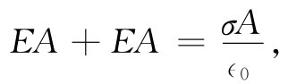
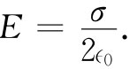
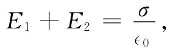

作为另一个例子，我们现在来计算均匀面电荷所产生的场。假设该面延伸至无限远，而且单位面积的电荷为σ。我们要做一种推测：考虑到对称性，我们相信场的方向处处与该平面垂直，而倘若没有来自世界上任何其他电荷的场 ，则两边的场（大小）应相等。这次我们选取的高斯面是一个穿过该平面的四方盒子，如图5-6所示。平行于该平面的两个表面面积相等，比如说A。场垂直于此两面，而与其他的四个面平行。总通量等于E乘以第一个面的面积，加上E乘以其对面的面积——其他四个面都没有做任何贡献。包含在该盒子里的总电荷为σA。使通量与其内部电荷相等，我们便有

由此得
 （5.3）
这是一个简单而又重要的结果。
图5-6 在一均匀带电面附近的电场，可通过应用高斯定律于一个想象的盒子而求得
你或许记得，这同样的结果曾在前面一章中通过对整个面进行积分而获得。在这个例子中，高斯定律更迅速地给出了答案（虽则它并不如以前的方法那么普遍适用）。
必须强调，这一结果仅 适用于面电荷的场。如果在面电荷附近还有别的电荷，则靠近该面的总场就应等于式（5.3）与其他电荷的场之和。此时，高斯定律只会告诉我们：
 （5.4）
式中E1 和E2 分别代表从该面每侧指向外之场。
图5-7 两块带电板之间的场为σ/∈0
只要我们再次假定其外部世界是对称的，带有相等相反电荷（密度分别为+σ和-σ）的两平行板问题也同样简单. 通过对由单块板所得的两结果叠加，或者通过构成一个包括两板在内的高斯盒，都不难见到，在该两板之外 的电场为零［图5-7（a）］。由考虑一个只包括这块或那块板在内的盒，如图5-7（b）或（c）所示的那样，则能看出两板间的场应两倍于单独一块板的场。结果是：
E（在两板之间）=σ/∈0 ； （5.5）
E（在两板之外）=0. （5.6）